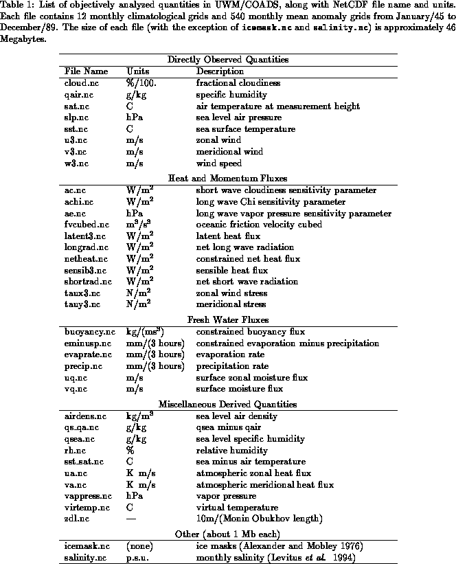
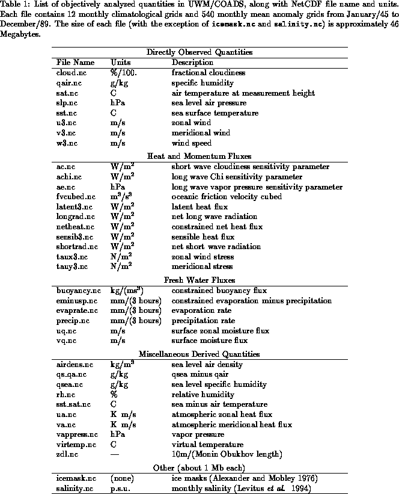
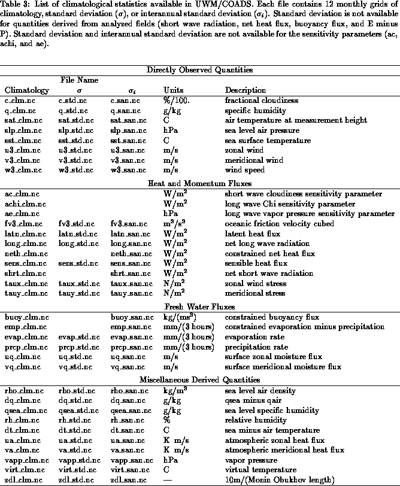

Next: Data source and
Up: Atlas of Surface
Previous: Introduction
The UWM/COADS data set is a collection of global  raw and
analyzed gridded fields covering the period from January 1945 to
December 1989. These fields have been derived primarily from
individual observations in COADS (see section 3), with
additional corrections as described in section 6. Our
quality control procedure uses a more stringent criterion over regions
climatologically covered by sea ice; the climatological ice mask
used was derived from the sea surface temperature and sea ice data set
by Alexander and Mobley (1976). In the calculation of buoyancy fluxes
(section 7) we use the recent estimates of
monthly mean salinity by Levitus et al. (1994). These two data sets
are included in UWM/COADS for the sake of completeness.
raw and
analyzed gridded fields covering the period from January 1945 to
December 1989. These fields have been derived primarily from
individual observations in COADS (see section 3), with
additional corrections as described in section 6. Our
quality control procedure uses a more stringent criterion over regions
climatologically covered by sea ice; the climatological ice mask
used was derived from the sea surface temperature and sea ice data set
by Alexander and Mobley (1976). In the calculation of buoyancy fluxes
(section 7) we use the recent estimates of
monthly mean salinity by Levitus et al. (1994). These two data sets
are included in UWM/COADS for the sake of completeness.
 



The data set is organized in 5 main subsets:
- Directly Observed Quantities.
- This subset contains the most
basic surface marine parameters entering our calculations. Although
monthly mean nonlinear fluxes cannot be directly derived from the
monthly means of these parameters, many of the qualitative features in
the fluxes can be traced to the seasonal and interannual
characteristics of these basic fields. See
Table 1 for a list of these quantities.
- Heat and Momentum Fluxes.
- This subset includes estimates of
wind stress, sensible and latent heat fluxes, as well as radiational
fluxes at the ocean surface. The wind speed entering these
calculations has been corrected according to our revised Beaufort
equivalent scale (section 5). This correction
eliminates much
of the bias and artificial trends associated with the erroneous WMO
Code 1100 scale used in COADS Release 1. Transfer coefficients are
based on Large and Pond (1981, 1982). The estimates of heat and
radiational fluxes, when combined to form the net heat flux at the
ocean surface, do not yield a physically plausible implied oceanic heat
transport. This problem is circumvented by a simple linear inverse
calculation which provides a systematic way to fine tune parameters in
the bulk formulas (section 9). Gridded sensitivity
parameters are included in this subset to allow users to experiment
with different ways of constraining the surface fluxes.
- Fresh Water Fluxes.
- This subset includes estimates of
evaporation, precipitation, and the corresponding buoyancy fluxes
based on Levitus et al. (1994) climatological sea surface salinity.
- Miscellaneous Derived Quantities.
- This subset contains several
derived quantities of general interest, most of which are available in
the original COADS Monthly Mean Summaries. Refer to
Table 1 for a list of these
parameters.
- Number of Observations.
- The distribution
of surface marine data
is highly variable in space and time. The surface marine observing
system is clearly not adequate to truly resolve global anomalies,
especially in the decade following World War II. Even today, large
portions of the tropics and the southern oceans are extremely
under-sampled. However, there is no simple way to determine the
validity of
our analysis over the oceans. Some regions of the tropics that were
void of data in the early years have experienced an increase in
coverage throughout the years. In order to assist users determining
the reliability of our analyses we have included files with the number
of observations for some of the basic quantities. Some issues related
to sampling and fair weather bias are addressed in
section 10.
The data is stored using Unidata's Network Common Data Format (NetCDF)
described in Rew et al. (1993). NetCDF is self-describing and
system-independent software for storing scientific data and is
currently available for most Unix workstations, supercomputers and
personal computers. A description of the UWM/COADS data formats,
FORTRAN subroutines needed to read the data, and a description of
NetCDF commands can be found in Appendices C-E.
FORTRAN access software and examples of how to read the data are also
included in the data distribution.
The objectively analyzed anomaly and
climatology files are listed in Table 1. The companion
raw (non-analyzed) monthly mean files appear in Table 2.
Table 3 lists files with analyzed climatological
statistics such as means, standard deviations and number of
observations (see section 8 for definitions of these
statistics).
Next: Data source and
Up: Atlas of Surface
Previous: Introduction